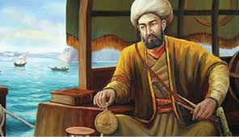

Pîrî Reis
| Pîrî Reis | |
|---|---|
|  | |
| Doğum | Ahmet Muhyiddin Pîrî 1465-70 Gelibolu |
| Ölüm | 1554 Kahire |
| Milliyet | Türk |
| Meslek | Coğrafyacı, Denizci |
Pîrî Reis (Osmanlı Türkçesi: پیری رئیس; 1465/70, Gelibolu – 1554, Kahire), Osmanlı Türkü denizci ve kartograf. Asıl adı Muhyiddin Pîrî Beydir. Künyesi Ahmet ibn-i el-Hac Mehmet El Karamani'dir. Amerika'yı gösteren Dünya haritaları ve Kitab-ı Bahriye adlı denizcilik kitabıyla tanınmıştır.
Hayatı
Çocukluğu ve gençlik yılları
Karamanlı bir ailenin çocuğu olan Ahmet Muhyiddin Pîrî'nin ailesi II. Mehmed devrinde padişahın emri ile Karaman'dan İstanbul'a göç ettirilen ailelerdendir. Aile bir süre İstanbul'da yaşamış, sonra Gelibolu'ya göç etmiştir. Pîrî Reis'in babası Karamanlı Hacı Mehmed, amcası ise ünlü denizci Kemal Reis'tir.
Denizciliğe adım
Pîrî Reis 1481'de Akdeniz'de korsanlık yapmakta olan amcası Kemal Reis'in yanında denize açıldı. 1487’de amcası ile birlikte İspanya’daki Müslümanlar’ın yardımına gitti. Pîrî, denizciliğe amcası Kemal Reis'in yanında başladı; 1487-1493 yılları arasında birlikte Akdeniz'de korsanlık yaptılar; Sicilya, Korsika, Sardinya ve Fransa kıyılarına yapılan akınlara katıldılar. 1486'da Endülüs'te Müslümanların hâkimiyetindeki son şehir olan Gırnata'da katliama uğrayan Müslümanlar Osmanlı Devleti'nden yardım isteyince o yıllarda deniz aşırı sefere çıkacak donanması bulunmayan Osmanlı Devleti, Kemal Reis'i Osmanlı Bayrağı altında İspanya'ya gönderdi. Bu sefere katılan Pîrî Reis, amcası ile birlikte Müslümanları İspanya'dan Kuzey Afrika'ya taşıdı.
Osmanlı Donanması'na katılması
Venedik üzerine sefer hazırlığına girişen II. Beyazid'in Akdeniz'de korsanlık yapan denizcileri Osmanlı donanmasına katılmaya çağırması üzerine 1494'te amcası ile birlikte İstanbul'da padişahın huzuruna çıktı ve birlikte donanmanın resmî hizmetine girdiler. Daha sonra Osmanlı Donanması'nın Venedik Donanması'na karşı sağlamaya çalıştığı deniz kontrolü mücadelesinde Osmanlı donanmasında gemi komutanı olarak yer aldı, böylece ilk kez savaş kaptanı oldu. Yaptığı başarılı savaşların sonucunda Venedikliler barış istediler ve iki devlet arasında bir barış anlaşması yapıldı. Pîrî Reis, 1495-1510 yıllarında İnebahtı Sancağı, Moton, Koron, Navarin, Midilli, Rodos gibi deniz seferlerinde görev aldı. Akdeniz'de yaptığı seyirler sırasında gördüğü yerleri ve yaşadığı olayları, daha sonra Kitab-ı Bahriye adıyla dünya denizciliğinin de ilk kılavuz kitabı olma özelliğini taşıyacak olan kitabının taslağı olarak kaydetti.
Pîrî Reis, 1511'de amcasının bir deniz kazasında ölümünden sonra Gelibolu'ya yerleşti. Barbaros Kardeşler'in idaresi altındaki donanmada halaoğlu Muhiddin Reis ile Akdeniz'de bazı seferlere çıktıysa da daha çok Gelibolu'da kalıp haritaları ve kitabı üzerinde çalıştı. Bu haritalardan ve kendi gözlemlerinden yararlanarak 1513 tarihli ilk dünya haritasını çizdi. Atlas Okyanusu, İber Yarımadası, Afrika'nın batısı ile yeni dünya Amerika'nın doğu kıyılarını kapsayan üçte birlik parça, bu haritanın günümüzde elde bulunan bölümüdür. Bu haritayı dünya ölçeğinde önemli kılan, günümüze kalmamış olan,[kaynak belirtilmeli] Kristof Kolomb'un Amerika haritasındaki bilgileri içeriyor olması rivayetidir.
Barbaros Kardeşler, 1515 yılında dünyanın en büyük deniz güçlerinden birisini oluşturmuş ve Kuzey Afrika'da fetihler yapmışlardı. Pîrî Reis, Oruç Reis'in kaptanlarından birisi olarak hediye sunmak üzere yardımını bekledikleri Yavuz Sultan Selim'e gönderildiğinde Yavuz'un yardım olarak verdiği iki savaş gemisi ile geri döndü. Pîrî Reis, 1516-1517 yıllarında İstanbul'a geldiğinde tekrar Osmanlı donanmasının hizmetine girdi; Derya Beyi (Deniz Albayı) rütbesini aldı ve Mısır seferine gemi komutanı olarak katıldı. Donanmanın bir kısmı ile Kahire'ye geçip Nil Irmağı'nın haritasını çizme fırsatı buldu.
Pîrî Reis, İskenderiye'nin ele geçirilmesinde gösterdiği başarılar ile padişahın övgüsünü kazandı ve sefer sırasında haritasını padişaha sundu. Günümüzde bu haritanın bir parçası mevcuttur, diğer parçası kayıptır. Bazı tarihçilere göre, Osmanlı padişahı dünya haritasına bakmış ve "Dünya ne kadar küçük..." demiştir. Sonra da, haritayı ikiye bölmüş ve "biz doğu tarafını elimizde tutacağız.." demiştir.. Padişah, daha sonra 1929'da bulunacak olan diğer yarıyı atmıştır. Bazı kaynaklarca, günümüzde bulunamamış olan doğu yarısını, Hint Okyanusu'nun ve onun Baharat yolunun kontrolünü ele geçirmek için Padişahın yapacağı olası bir sefer için kullanmak istediği bile iddia edilmektedir.
Pîrî Reis seferden sonra, tuttuğu notlardan Bahriye için bir kitap yapmak amacıyla Gelibolu'ya döndü. Derlediği denizcilik notlarını bir Denizcilik Kitabı (Seyir Kılavuzu) olan Kitab-ı Bahriye'de bir araya getirdi.
Kanûnî Sultan Süleyman'ın dönemi, büyük fetihler dönemiydi. Pîrî Reis, 1523'deki Rodos seferi sırasında da Osmanlı Donanması'na katıldı. 1524'te Mısır seyrinde kılavuzluğunu yaptığı sadrazam Pargalı Damat İbrahim Paşa'nın takdiri ve desteğini kazanınca, 1525'te gözden geçirdiği Kitab-ı Bahriye'sini İbrahim Paşa aracılığıyla Kanuni'ye sundu.
Pîrî Reis'in 1526'ya kadar olan yaşamı Kitab-ı Bahriye'den izlenebilir. Pîrî Reis, 1528'de, ilkinden daha içerikli ikinci dünya haritasını çizdi.
1533 yılında Barbaros Hayreddin Paşa kaptan-ı derya olunca Pîrî Reis de Derya Sancak Beyi (Tümamiral) unvanı aldı. Pîrî Reis, sonraki yıllarda, güney sularında devlet için çalıştı. Barbaros'un 1546'da ölümünün ardından Mısır Kaptanlığı (Hint Denizleri Kaptanlığı da denilirdi) yaptı, Umman Denizi, Kızıl Deniz ve Basra Körfezi'ndeki deniz görevlerinde yaşlandı. Osmanlı donanmasında yaptığı son görev idamıyla sonuçlanan Mısır Kaptanlığı oldu.
Ölümü
Pîrî Reis, Kanûnî devrinde Portekiz ile sürekli savaş halindeydi. 80 yaşındayken Aden şehrindeki Arap isyanını bastırmakta başarılı olduğu için kendisine yeni bir görev verildi. Süveyş'ten donanma ile Basra'ya gidip, buradaki 15.000 askeri ve diğer gemileri de yanına alarak, Hürmüz Adası'nı ele geçirmesi istendi. Bu adaya mümkün olduğunca Portekizlilere bulaşmadan ulaşması isteniyordu. Hint Okyanusu'na otuz civarı gemi ile açılan Pîrî Reis, kendisinden iki kat sayıca fazla Portekiz gemisini burada yenmeyi başardı. Savaştan kurtulup kaçan kimi Portekizliler Hürmüz adasındaki kaleye sığındı. Kalenin etrafı sarıldı fakat buradaki Portekiz garnizonu hazırlıklı olduğu için işgal edilemedi. Kuşatma kaldırıldı. Bazı tarihçiler bu kuşatmanın kaldırılma nedeninin Pîrî Reis'in Portekizlilerden rüşvet alması olduğunu iddia ederler. Bölge halkının Portekizlilere yardımı üzerine kızan Pîrî Reis, burayı yağmaladı.
Bu yağma onu idam sürecine götüren olayı başlattı. Basra valisi Ramazanoğlu Kubad Paşa'dan yardım istedi. Fakat vali onu bu yağmadan dolayı tutuklamak ve mallarına el koymak istedi. Portekiz donanmasının geniş bir kuvvetle Basra körfezini kapatmak üzere yola çıktığını haber aldı. Pîrî Reis'in donanması bakım ve onarım yaptırıyordu. Portekizlilerin ablukasına maruz kalmamak için askerlerini bırakarak 3 gemi ganimet ile Süveyş'teki donanma merkez tersanesine geri döndü.[4] Basra valisinin şikayeti Mısır valisine ulaştı. Pîrî Reis tutuklandı. Mısır valisinden divana iletilen konuda Pîrî Reis kuşatmayı kaldırmak ve donanmayı bırakmak suçlarından yargılandı. Kendisi bakımsız donanma ile denize açılmasının sakıncalarını dile getirdiyse de suçlu bulunmasına engel olamadı.[4] Kanûnî Sultan Süleyman'ın fermanı üzerine 1553'te Kahire'de boynu vurularak idam edildi.[1] İdam edildiğinde 80 yaşının üzerinde olan Pîrî Reis'in terekesine devletçe el konuldu.
Popüler kültürdeki yeri
Ubisoft'un yapımcılığını üstlendiği Assassin's Creed: Revelations adlı oyunda Pîrî Reis, donanma için çalışan ve suikastçı birliğinin üyesi olan önemli bir karakter olarak oyuna eklenmişti. Ayrıca Pîrî Reis, bu oyunda bomba yapımında usta biri olarak dünyaya tanıtılmıştı.
Başlıca eserleri
- Kitab-ı Bahriye
- Pîrî Reis Haritası
- Hadikat'ül Bahriye
- Bilad-ül Aminat
- Eşkalname